Gaston Leroux
Advokát, súdny reportér, literárny autor: muž, ktorý napísal Fantóma opery.
Táto stránka stojí na podkladoch, ktoré nám v novembri 2026 dala Famille Gaston Leroux: odpovede rodiny, fotografie a dokumenty.

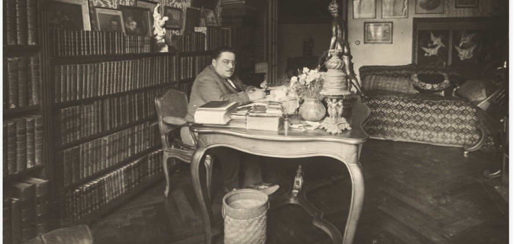
Život
- 6. mája 1868
Narodil sa o deviatej ráno v Paríži, 66, rue du Faubourg-Saint-Martin (10. obvod), ako Gaston Alfred Louis. Otec Dominique Alfred Le Roux bol podnikateľ vo verejných prácach, matka Marie Alphonsine Bidaut. 1matrika
- Advokát
Fotografia v advokátskom talári z rodinného archívu. 3rodina
- 8. februára 1894
Prijatý do Association de la Presse Judiciaire Parisienne – spolku parížskych súdnych reportérov. 2preukaz
- 1897
Prvýkrát v Rusku: sprevádza prezidenta Félixa Faura na oficiálnej ceste. 3rodina
- 10. mája 1899
Sobáš v Paríži (9. obvod) s Marie Eugénie Octavie Lefranc. 1matrika
- 1904
Denník Le Matin ho posiela do Ruska ako reportéra rusko-japonskej vojny. 3rodina
- 1905
Znova v Rusku, píše o revolúcii a kríze cárskeho režimu. Ide s Jeanne Cayatte, ktorá čaká dieťa: 31. júla 1905 sa v Petrohrade narodí ich syn Alfred Gaston Leroux. 3rodina
- 1909 – 1910
V Nice, vo Villa Les Cascades na Mont Borone, píše Fantóma opery. Vychádza na pokračovanie v denníku Le Gaulois od septembra 1909 do januára 1910, knižne u Pierra Lafitta v roku 1910. 3rodina
- 1912
Balaoo – vedecko-fantastický román, ktorý má rodina zo všetkých jeho kníh najradšej. 3rodina
- 1913
Po ruských cestách vychádza Rouletabille chez le Tsar (Pierre Lafitte). 3rodina
- 14. júna 1917
Sobáš v Saint-Maur s Jeanne Madeleine Barbe Cayatte. 1matrika
- 1918 – 1920
Na nakrúcaní filmovej adaptácie jedného zo svojich románov, s manželkou a dcérou. 3rodina
- 15. apríla 1927
Zomiera v Nice. Odpočíva na cintoríne Château v Nice, hneď vľavo od vchodu, spolu s manželkou Jeanne (1878 – 1962) a dcérou Madeleine. 3rodina
Ako si ho pamätá rodina
Pre rodinu bol radosťou zo života: bon vivant, plný lásky, epikurejec a talentovaný génius – v očiach svojej rodiny a dnes aj jej potomkov.
„Fatalitas!“
Zvolanie tvárou v tvár osudu a jeho zaťatosti. Spojil ho s postavou Chéri-Bibi.
„Il n’y a pas de hasard.“
Náhody neexistujú. Vetu často opakoval, počul ju od neho syn a v rodine sa odovzdáva z generácie na generáciu.
Výstrel z balkóna
Keď dopísal román, vyšiel na balkón Villa Les Cascades a vystrelil z pištole. Potom nasledovala oslava, hostina a šampanské.


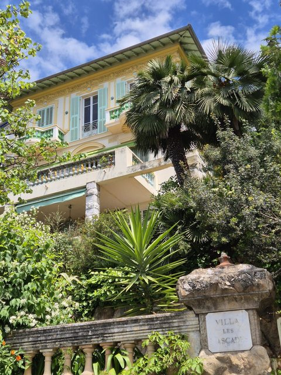
Jeho denný rozvrh práce v Nice visel v izbe dcéry. Musela ho každý deň pozdraviť.

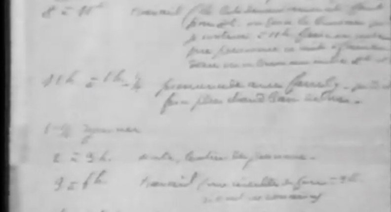

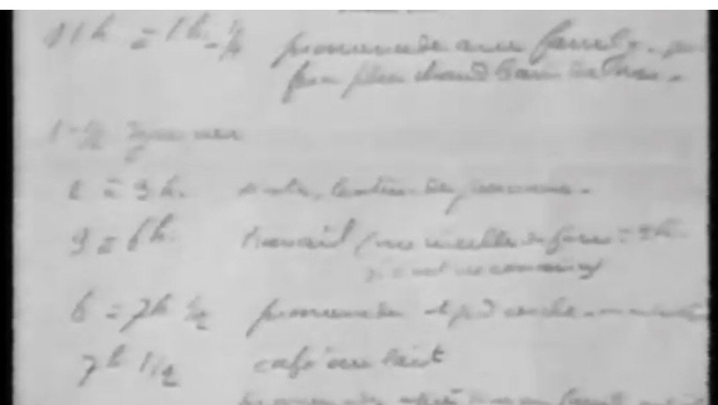


Montmartre
Jeho najsilnejším putom s Montmartrom bol brat Joseph Leroux, šansoniér a herec, ktorý býval na rue Gabrielle. Bratia sa stretávali v kabarete, ktorému sa hovorilo Cabaret des Assassins – dnešný Lapin Agile, kde sa rád zabával aj Aristide Bruant.

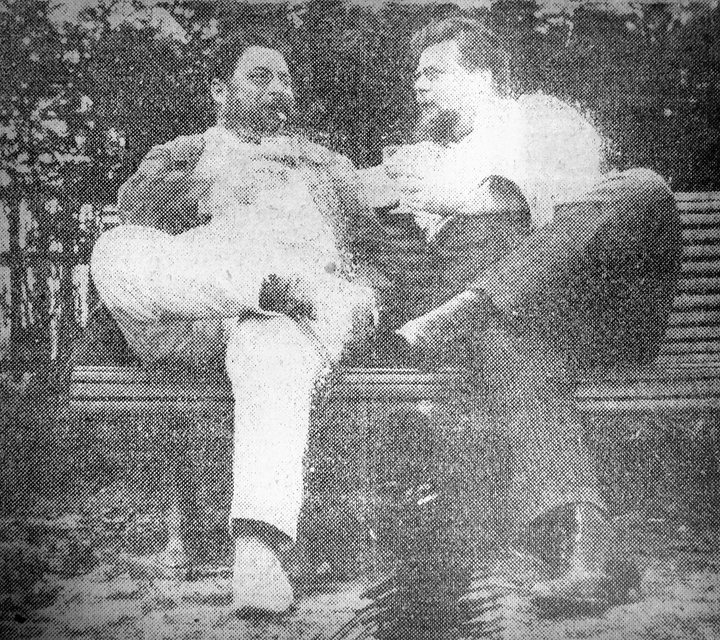

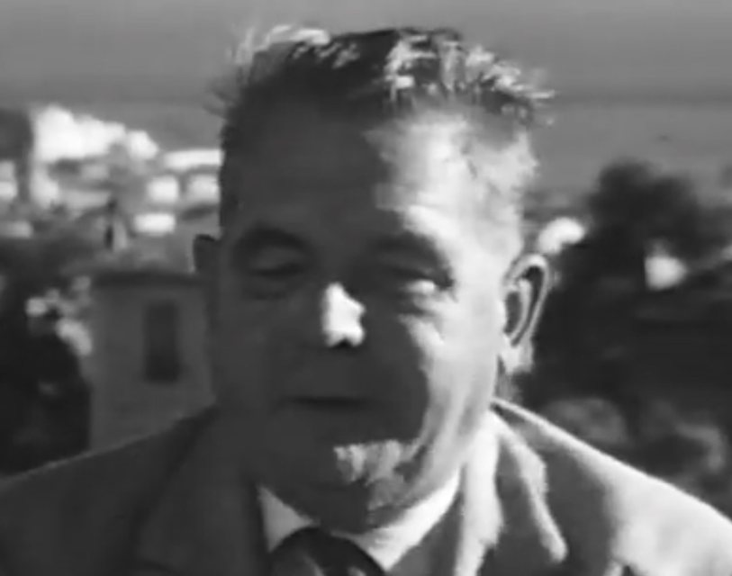


Divadlo
Rukopis jeho hry v troch dejstvách L’Adieu à la vertu.

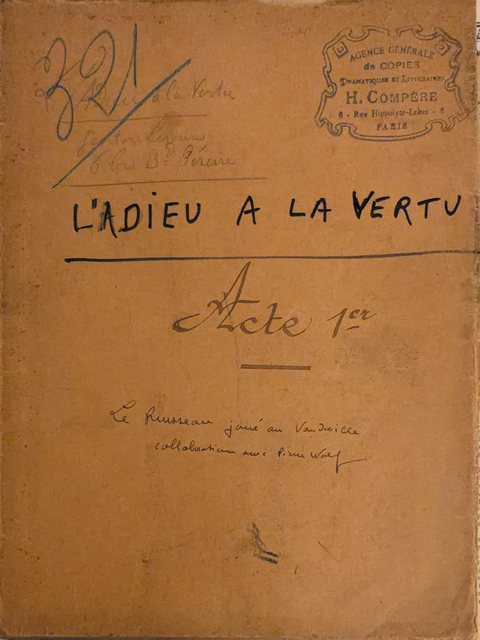


Z archívu rodiny
Paríž


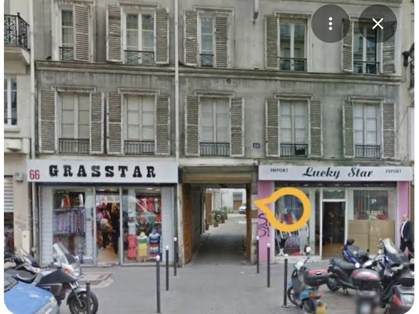

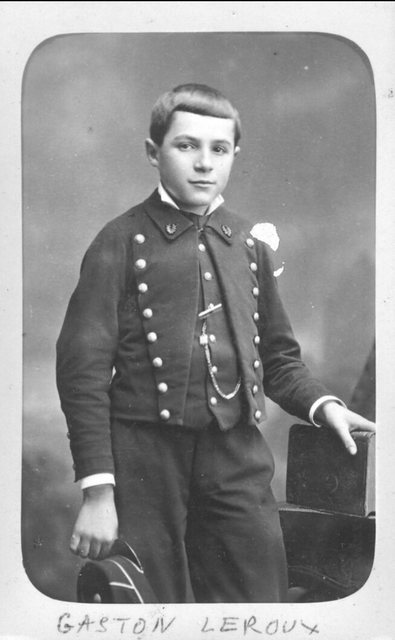


Rusko


Rodina


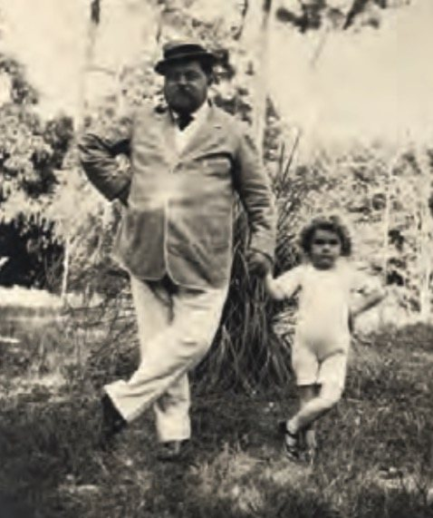


Listy a predmety

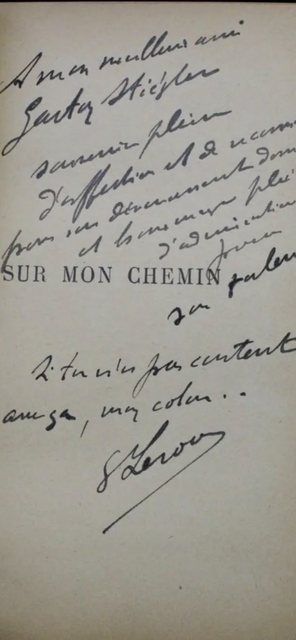

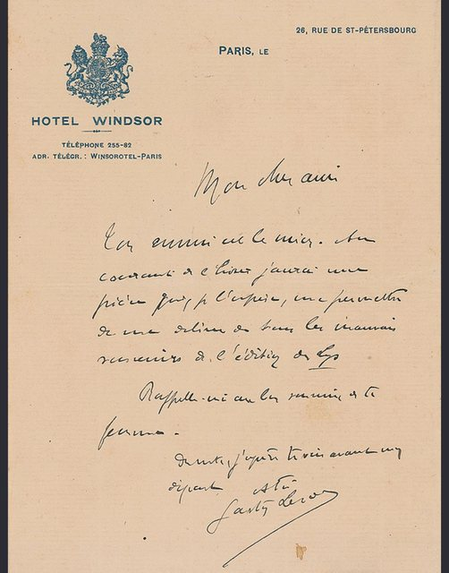


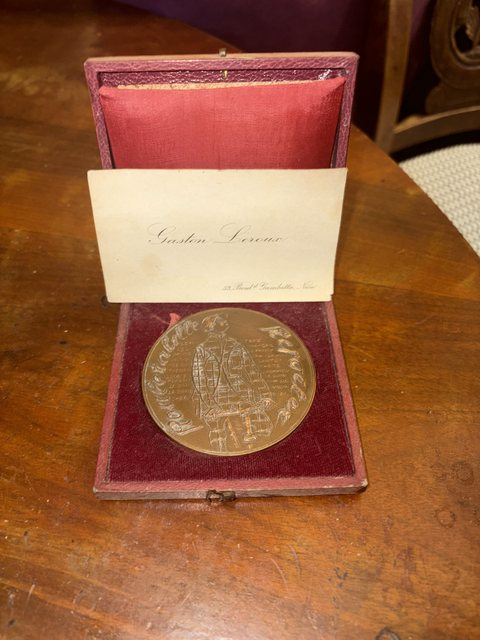

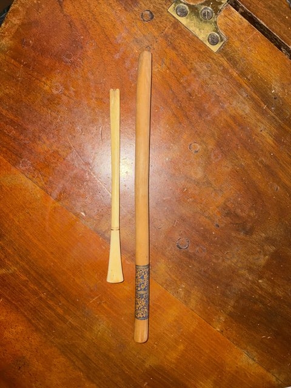
Nice

![Villa Les Cascades [1912] · © J. V. Ville de Nice, 2017](../assets/rodina_hd/vila_1912.jpg)


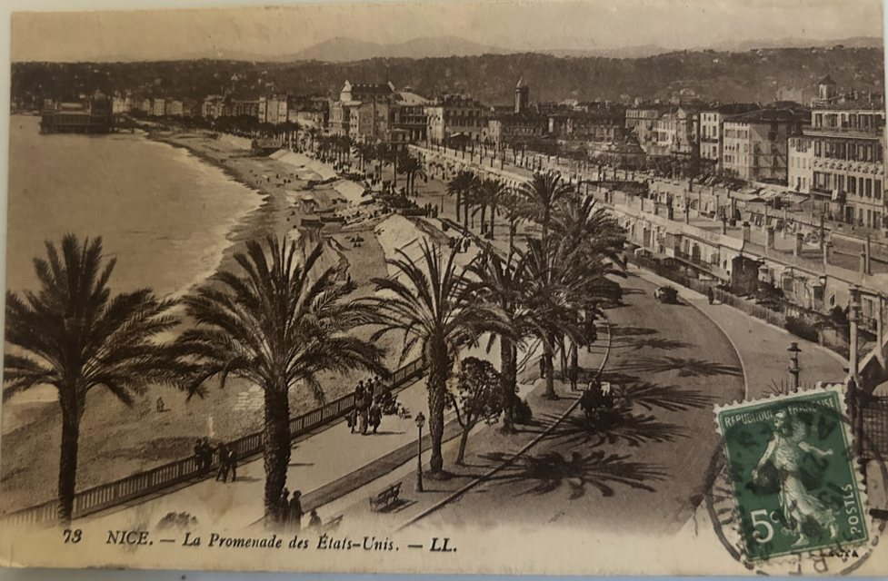


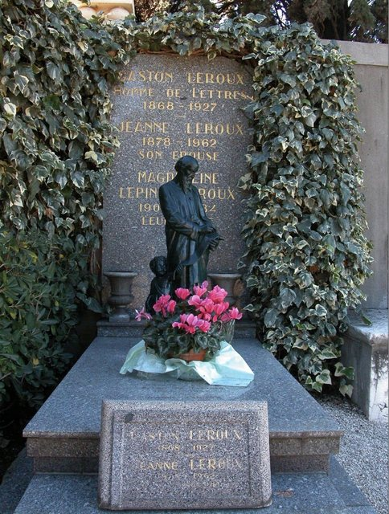
- Famille Gaston Leroux: odpovede na dotazník LEROUX100 a dokumenty z rodinného archívu, november 2026
- Výpis z matriky narodených, Préfecture de la Seine, Mairie du Xe arrondissement, Paríž 2. 12. 1922 (dokument od rodiny)
- Preukaz Association de la Presse Judiciaire Parisienne (dokument od rodiny)